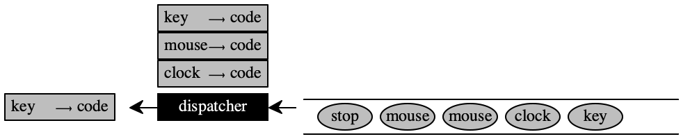
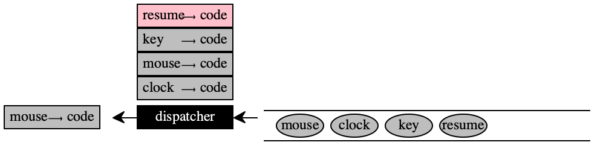
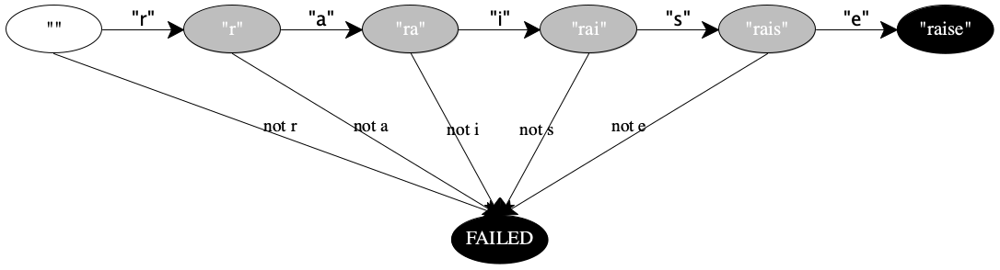

24 —
Friday, 03 April 2020
Presenters (1) Alexander Takayama & (2) Khalil Haji & Griffin Rademacher
Stop! Is the CESK interpretation of Expr sound? Can it produce nonsensical results? Can it get stuck in a state that isn’t final?
Soundness aka (Memory) Safety
As spelled out, the mathematical model could be interpreted either way. The transition table carefully spells out when a value is expected to be a plain value, when a location, or when it doesn’t matter.
If the set of Locs is disjoint from the set of Numbers (no common elements), then the machine gets stuck if locations are used as numbers or vice versa.
If the set of Locs is, say, the set of natural numbers, then the machine may conflate locations and numbers when transitioning from one state to another. The distinguishing new error state is one in which the machine attempts to retrieve a value from a location that does not exist. Other error states disappear, because multiplying locations, for example, is now perfectly fine. The trade-off is a horrible one as those of you had the pleasure of writing code in C. C++, or Objective C can witness.
((1 alloc 2) + 3)
[((1 alloc 2) + 1) dot left]
([(1 alloc 2) * (3 alloc 4)] dot left)
So how does the machine behave on such expressions? Which behavior is better?
If locations are drawn from the set of numbers ... In papers on programming language research, you might see this idea expressed as follows:
Loc ⊆ Number
*C |
| *E |
| *S |
| *K |
| |
((1 alloc 2) + 3) |
| ∅ |
| ∅ |
| |||
(1 alloc 2) |
| ∅ |
| ∅ |
| [L ∅ + 3] | ||
0 |
| ∅ |
| 0 ↦ 1, 1 ↦ 2 |
| [L ∅ + 3] |
| pop |
0 |
| ∅ |
| 0 ↦ 1, 1 ↦ 2 |
| [L ∅ + 3] | ||
(0 + 3) |
| ∅ |
| 0 ↦ 1, 1 ↦ 2 |
| |||
3 |
| ∅ |
| 0 ↦ 1, 1 ↦ 2 |
|
| pop | |
3 |
| ∅ |
| 0 ↦ 1, 1 ↦ 2 |
| |||
Is a location a result that a user expects?
*C |
| *E |
| *S |
| *K |
| |
(((1 alloc 2) + 1) dot left) |
| ∅ |
| ∅ |
| |||
((1 alloc 2) + 1) |
| ∅ |
| ∅ |
| [L ∅ dot left] | ||
(1 alloc 2) |
| ∅ |
| ∅ |
| [L ∅ dot left], [L ∅ + 1] | ||
0 |
| ∅ |
| 0 ↦ 1, 1 ↦ 2 |
| [L ∅ dot left], [L ∅ + 1] |
| pop |
0 |
| ∅ |
| 0 ↦ 1, 1 ↦ 2 |
| [L ∅ dot left], [L ∅ + 1] | ||
(0 + 1) |
| ∅ |
| 0 ↦ 1, 1 ↦ 2 |
| [L ∅ dot left] | ||
1 |
| ∅ |
| 0 ↦ 1, 1 ↦ 2 |
| [L ∅ dot left] |
| pop |
1 |
| ∅ |
| 0 ↦ 1, 1 ↦ 2 |
| [L ∅ dot left] | ||
(1 dot left) |
| ∅ |
| 0 ↦ 1, 1 ↦ 2 |
| |||
2 |
| ∅ |
| 0 ↦ 1, 1 ↦ 2 |
|
| pop | |
2 |
| ∅ |
| 0 ↦ 1, 1 ↦ 2 |
| |||
What if we had added -1 to the result of alloc? What if we had added 3? Which value would we get?
The model presented here is precisely what languages such as C, C++, and
Objective C implement. Many Python libraries are actually just thin veneers
over such C code, which makes some of them blazingly fast—
When locations are numbers, we speak of a language that lacks memory safety because it can access any location, whether it is meaningful or not.
Stop! Run the location-multiplication expression on your CESK machine? What does it yield?
If locations are distinguishable from numbers ... Now suppose Loc and the set values do not overlap:
Loc ∩ Number = ∅
*C |
| *E |
| *S |
| *K |
| |
((1 alloc 2) + 3) |
| ∅ |
| ∅ |
| |||
(1 alloc 2) |
| ∅ |
| ∅ |
| [L ∅ + 3] | ||
0 |
| ∅ |
| 0 ↦ 1, 1 ↦ 2 |
| [L ∅ + 3] |
| pop |
0 |
| ∅ |
| 0 ↦ 1, 1 ↦ 2 |
| [L ∅ + 3] | ||
(0 + 3) |
| ∅ |
| 0 ↦ 1, 1 ↦ 2 |
| |||
If a language handles Locs in this manner, it satisfies the property known as memory safety.
Tagged Integer In the world of real stores and even abstract
machines, natural numbers do not come in bold face. In an implementation
we tag the integer. At the hardware level this corresponds to reserving a
bit (or more) per word whose setting tells the “reader” whether it is a
location—
the program either returns a properly computed value
or it runs forever
or it stops with a well-known exception if the basic “arithmetic” calculations go wrong.
There are more Control Codes than Expressions
The trace above reveals something else: locations can become a part of the control code.
First, this kind of property distinguishes the CESK machine from a virtual machine or a hardware machine.
Second, this property is somewhat of an artifact of executing instructions directly in the *C register instead of a dedicated, separate part of the machine.
Alternatively, this could be avoided with a separate set of “pop” instructions or with an arrangement where only variable definitions allocate storage and place the location into the environment.
Third, as a consequence, locations can show up only in the control code register as the immediate operands of a control code, so they are easy to find.
Memory Layout
All programs in our small language terminate, and we know exactly how many store locations it allocates: twice the number of alloc expressions. Nevertheless it can create rather complex memory configurations. With this language a program can directly reach and change every location. The even-numbered locations always represent the left part of a pair; the odd-numbered locations contain the right part.
| [decl 'z [decl 'y (1 alloc 2)1 |
| (decl '_ (y set-left y)2 |
| [decl 'x (3 alloc 4)3 |
| (decl _ (x set-right x)4 |
| (decl '_ (y set-right x)5 |
| 'x))])] |
| '[[[z dot right] dot right] dot right]] |
time |
| store at t |
| |
t = 1 |
|  |
| allocate the pair [1,2] |
t = 2 |
|  |
| set the left part of the first pair to itself |
t = 3 |
|  |
| allocate a second pair, [3,4] |
t = 4 |
|
|
| set this second pair's right part to itself |
t = 5 |
|
|
| set the first pair's right part to the second pair |


a location can point to itself; see location 0
an even-numbered location such as 0 implicitly points to its neighbor
two locations can point to the same one; see 2, reachable from 1 and 3
chasing arrows can directly and indirectly get us into a “loop;”
with 'z and 'x pointing to 2, you can now see why the three steps in the above program on a single pair succeed just fine;
see the chain of arrows starting at 0, which implicitly goes from there to 1, explicitly to 2, implicitly to 3, and explicitly back to 2
but, some locations are not reachable from the other registers of the machine;
see location 0, which is assigned to the variable 'y which gets eliminated from the environment (together with 'x) when the inner nests of decl return the value of 'x and assigns it to 'z
Memory Management
When a programming language supplies a primitive such as 'alloc, developers are guaranteed to write code that sooner or later exhausts a computer’s memory capacity, because contrary to all rumors, even several gigabytes aren’t enough.
The language implementation combines the generated code with a runtime system; until now, we thought of this system as the prelude that defines all primitives. But there’s more to a runtime system, and this is the last major critical topic of this course.
How does your code get memory? It is the job of the operating system to manage scarce resources: network access, connections to a monitor, printing, time, and memory. With time, we mean CPU; there’s just a few but on the average a computer runs many more programs than that. So the OS allows every program to run every so often for a limited amount of time on (some of) the CPU(s).
Some people have predicted for a decade or two that the operating system will also provide a memory management service, like the one we’re discussing this week, to every running program. It hasn’t happened yet. What has happened is the emergence of two major runtime system as platforms: the JVM and the .NET system. All language implementations that target these platforms automatically benefit from the built-in garbage collector.
The operating system also reserves a certain amount of memory for every program. It is up to the program and the linked-in runtime system to manage this space.
So what does a runtime system do when your program has 'alloced all the space? When it has exhausted the store? It figures out what parts of the allocated memory are garbage.
The Truth GarbageT is any location that, when made inaccessible for the rest of a program evaluation, has no impact whatsoever on the visible behavior of the program.
As always, the truth isn’t decidable, which makes computer science and especially programming languages an interesting subject. Decidable means that there is no algorithm that consumes the state of a CESK machine and a location and produces a Boolean (with #true meaning the given location is garbageT and #false meaning it is not).
The Proof GarbageP is a location that, given the contents of the registers of a CESK machine, can be proven (by some algorithm) not to have any impact on the rest of the evaluation.
The Key GarbageP can be reclaimed and used again for other purposes.
The idea of garbage collection is due to the MIT Lisp team in the mid 1960s. Edwards implemented the first known garbage collector.
free ~~ Old programming languages, such as C, C++, Objective C and some more, provide a free function. A developer uses this function to tell the memory management system that a specific location is available for re-use. It is the responsibility of the developer to make sure that the program no longer needs access to the current value in this location. If the developer is wrong, we speak of a dangling pointer problem.
reference counting ~~ For the longest time, Python used a schema known as reference counting. Every location l comes with a “partner” location that contains the number of times l is referenced in the program. When this counter is 0, the memory management system may recycle the two locations.
Besides the cost and complexity of maintaining thus counter, it is also difficult to account for cycles in the memory graph. While some languages still use this old-fashioned scheme, most of those also support a garbage collection algorithm.
tracing garbage collection ~~ The most common algorithm in use starts from the (equivalent of the) E and K registers, follows the implicit and explicit arrows to all reachable locations, and recycles the others as garbage. We will study this algorithm in the next lecture.
conservative garbage collection ~~ Due to Boehm, a colleague of mine at Rice. The preceding description assumes that the algorithm can distinguish between integers (natural numbers) and locations and that it is possible to find all roots (source) locations in E and K. If the programming language design does not allow to make these distinctions, we speak of a non-cooperative I prefer “hostile” and told Boehm at the time. language. The idea of a conservative collector is to make, well, conservative guesses at what could be a location as opposed to a number and not recycle it. Furthermore, unlike tracing compilers which move “live” data from one place to another to reclaim garbageP memory, a conservative collector leaves it in place.
Note The word “conservative” is bogus but established terminology. Every garbage collector algorithm is conservative with respect to garbageT. And usually the word “conservative” is used when we speak of proof vs truth—
for example when we discuss the foundations of type systems or static analysis algorithms in compilers. But alas, the word has taken hold. If you are forced to program in C-like languages, consider the use of the Boehm conservative collector.
generational garbage collection ~~ Most people believe I use this word with its religious connotation only, not in the loose sense of “conjecture.” that allocated memory “dies young.” That is, locations that have been in use for a long time will remain in use, and recently allocated locations are more likely to be reclaimed.
Modern garbage collectors accommodate this idea with generations. They place survivors—
locations in long time use— into one region of allocated memory and recently allocated locations in a nursery, and this nursery is inspected for garbage more frequently than the region for survivors. When a location has lived for a certain number of garbage collections in the nursery, it is moved to the “old people’s home.” Clinger, a colleague who retired in 2019, conducted research in garbage collection. For the past decade or so of his active life, he tried to publish results that seriously question the “young locations die early” hypothesis. He has significant evidence that it applies only in some situations and that generational collectors may have fewer benefits than acclaimed.
concurrent garbage collection ~~ All of the above algorithms assume that, when your program runs out of memory and must allocate, we can stop the execution of the program (save all registers somewhere), inspect the store, collect the garbage, and re-start the program from where we stopped it. Hence they are called “stop the world” garbage collectors.
In some situations we may not wish to stop the program. This is mostly true for real-time system where a program must control physical objects (trains, planes, ships, missiles, medical instruments) the entire time.
To accommodate such situations, researchers develop targeted virtual machines with garbage collectors that run in parallel to the main program. These algorithms are extremely complex and costly. They are only now emerging for commercial use.
Prof. Vitek, while still at Purdue, worked on this problem with colleagues at IBM and eventually founded a small company to commercialize a concurrent garbage collector for a specialized Java Virtual Machine.
Crazy Ideas ~~ Remember that we discussed how to get back to the program from the state of the registers with the introduction of a new register. So, when we stop the program evaluation, we can actually re-construct a program that corresponds to the current state of the CESK machine—
not the source program. Then we can apply a type inference algorithm to this reconstructed program. Every location— represented as a variable— whose type is inferred to be just a type variable is garbage. Why?
A group at NYU and another one at INRIA France pursued this direction of research for a decade or so. In principle, this algorithm can discover more garbage than a tracing collector. But performing a type inference algorithm in the inner loop of a garbage collection world is costly. Nobody has so far succeeded in making it affordable.
Which Programming Language is Better for the Developer
Managing locations and managing allocated memory is one of the most critical concerns in the design of programming language runtime systems.
Until the late 1990s, languages that allowed the conflation of numbers and locations dominated the software development landscape.
Until then, two claims dominated our world:
(1) people are better than “computers” (a language’s runtime system together with the hardware) at managing locations,
and anyways,
(2) this kind of store access is needed to make programs fast.
The first claim is complete bogus and we actually knew that. Given that a
program manages dozens, hundreds, and thousands of allocated
locations—
The second claim has some truth to it in extremely narrow niche application areas. It may also hold when you have a brand-new machine and no real language on it to develop any software with, though in the 1970s and 80s we had hardware that could have distinguished locations from numbers.
As I have mentioned before, IBM ran a large-scale productivity experiment comparing C++ with Java, and Java won big time. Initially people thought it was type soundness that made Java superior to C++, but soon they realized it was really memory safety that saved developers tons of development time.
Zorn, a researcher at Colorado around the same time, analyzed many
realistic C/C++ programs, equipped them with a garbage collector, and ran
timing comparisons. To his surprise, the variants with garbage collectors
ran much faster than those with manually managed memory. He knew he
wouldn’t be able to get this result published—
Lesson Be skeptical of scientists and “consensus science.”
Alternative One can imagine a language that supports a separate domain of location numbers and arithmetic on such things. One can also imagine a language that allows programmers to state type-like claims about the ownership of locations so that two collaborating developers can get the “type checker” to validate their handling of locations.
This notion of ownership type was first conceived by Jan Vitek (a Northeastern professor now), was further developed by Jesse Tov (a Northeastern PhD who left when Vitek arrived), and became the foundation of the Rust programming language.